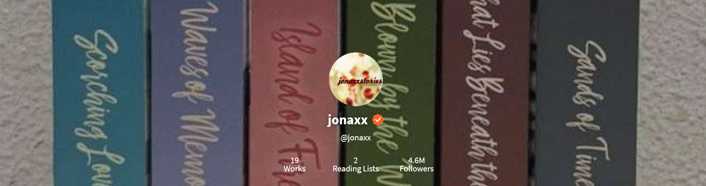
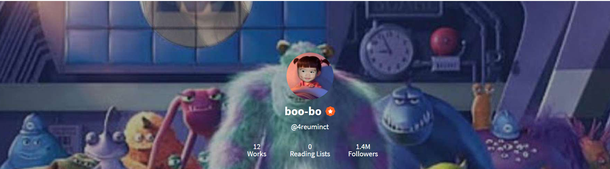
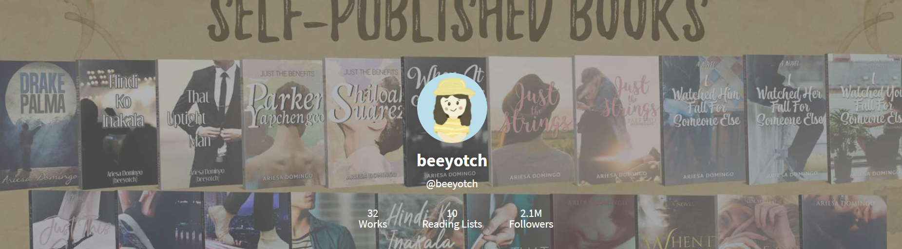

- jonaxx
- also known as Jonah Mae Pacala. An author from wattpad. She is known for her great works like Until Trilogy, mapapansin kaya and etc. Her books are more likely to be published by herself or you can buy it on Mpress on summit books. She is known for being an unbothered queen. She created her own app where you can find her books. It was open for public on July 15 2020. She is the most influencial writer to some teenagers.

- maxinejiji
- also known as Maxine Lat, the author of He's into her, a famous book where it will be a teleserye in ABS-CBN. She published he's into her around 2013 and finished it on 2017. Her fandom name is JIJIES. She is one of the successful authors in wattpad. Her fans calls her the "Hambogest." Her books are can be found on LIB publishing company. Her genres are more on romance, humor, and comedy.
- 4reumnict
- also known as Gwy Saludes. She is taking up BS Legal Management in Ateneo De Manila. She is known for her book which is university series. She is also a vlogger. She is the writer of the famous twitter serye "along Espana." Her story Zedvage Assault, first published in 2015. She is also kpop fan. Her fandom name is Areums.

- Beeyotch
- also known as Ariesa Domingo a law student. Most of her novels are self published. One of the best series she created is Game Series where it rolves around the law. She creates great plots.

- April_Avery
- april avery's real name was never told to the public. Her stories are more on about fantasy. One of her stories that is really my favorite is Something spectular. She always tell her readers to be brave.
- Serialsleeper
- also known as Maureen Apdian. The writer of the famous novel entitled as Stay Awake, Agatha. A writer in LIB corp.
- wooareyuhoo
- Also Known as Bianca Ysabelle, Yes right its me!! HAHHAHA Because why not right? She started writing back then at 2018. Her first wattpad story is I love you hater, the story is about her inspiration. She wrote this when she was in 1st year highschool. She stopped writing it and started writing on facebook. Her stories in facebook are more flash fictions. When around May 2020 she came back on wattpad and continued I love you hater but the ending here is the ending she'd never had. And at October 2020 she finished her book entitled, when in rpw. It is an epistolary.